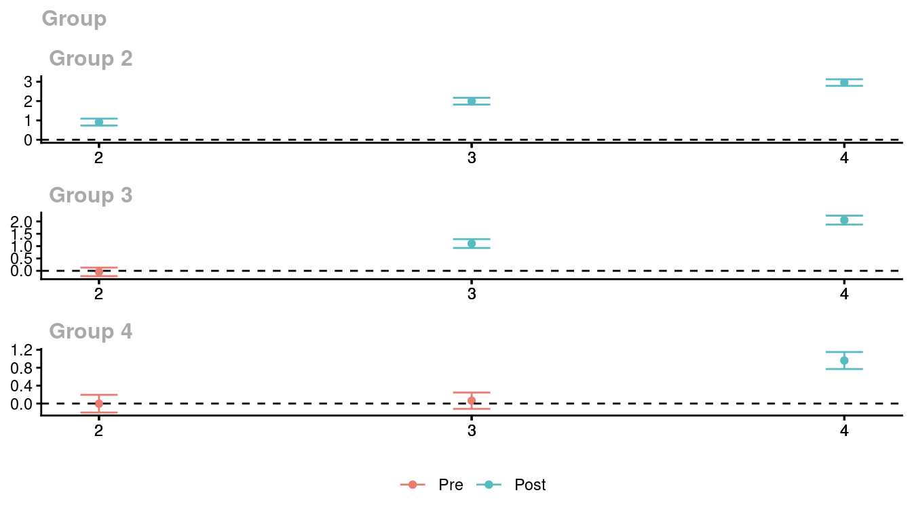
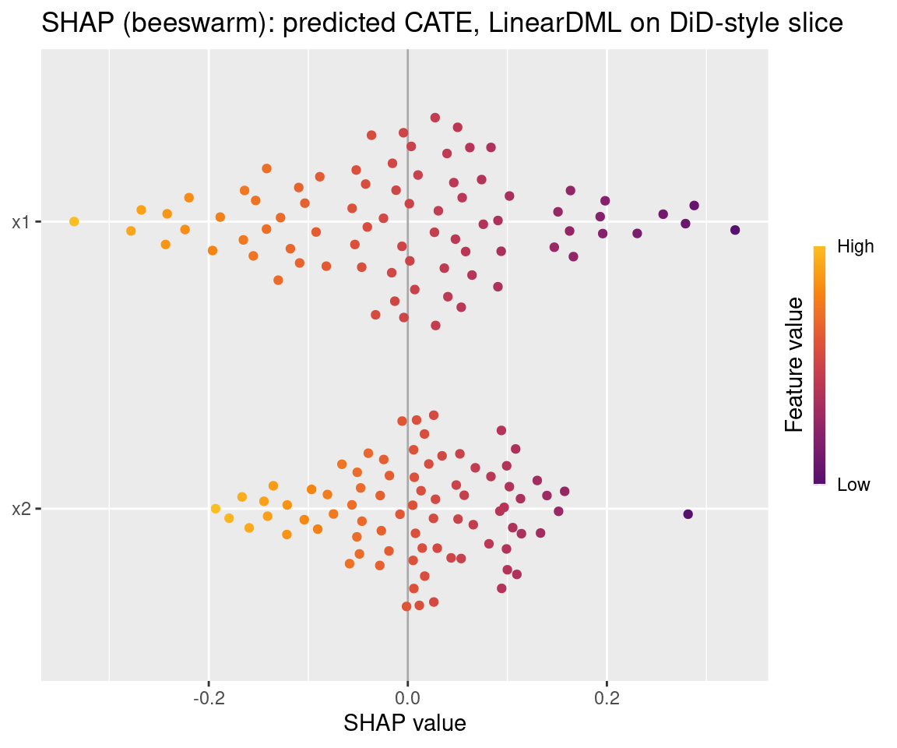
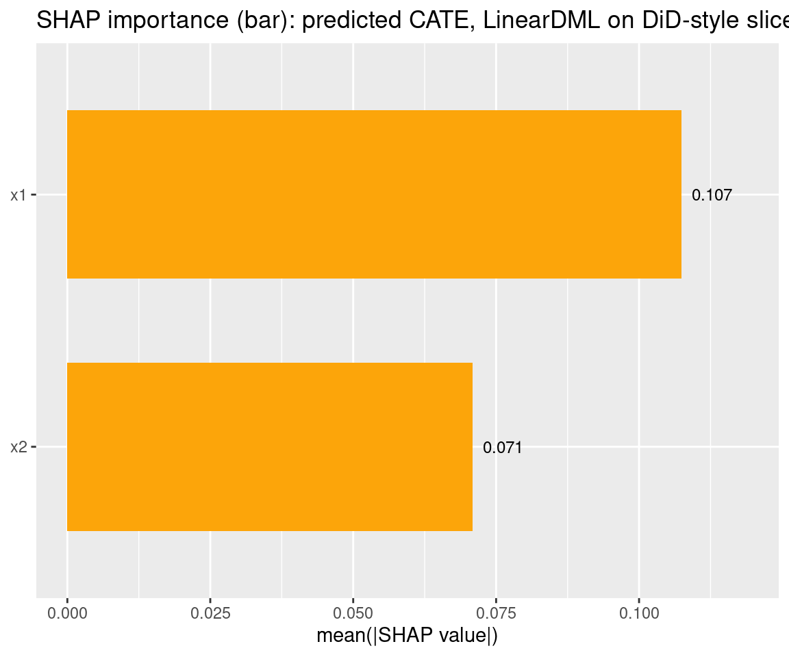
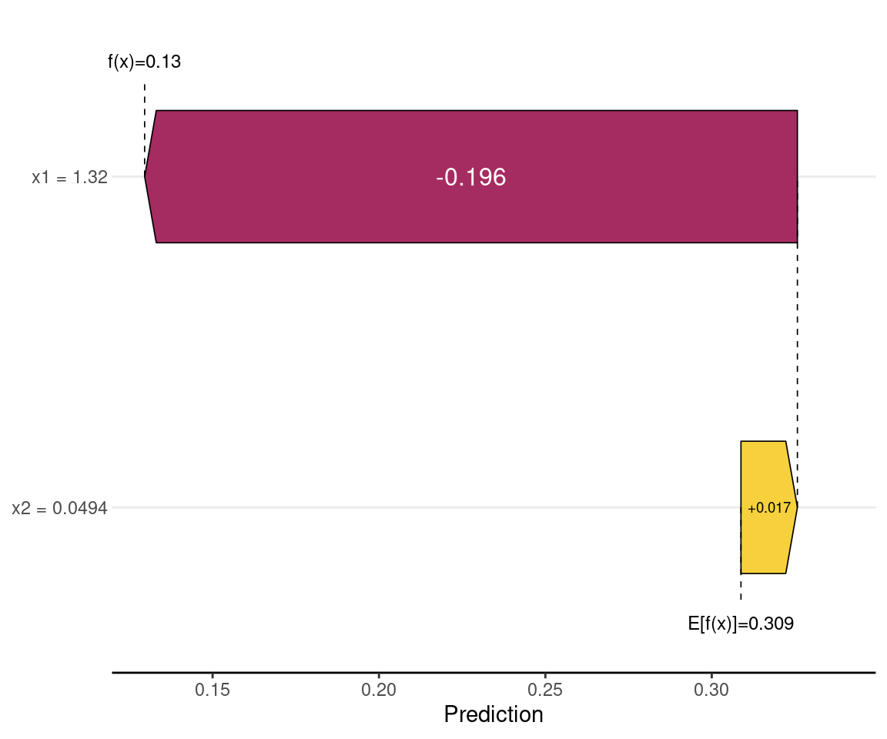
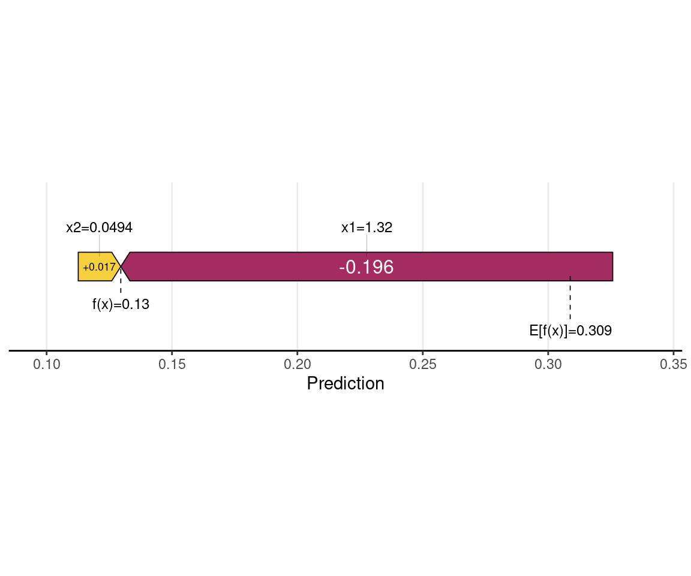
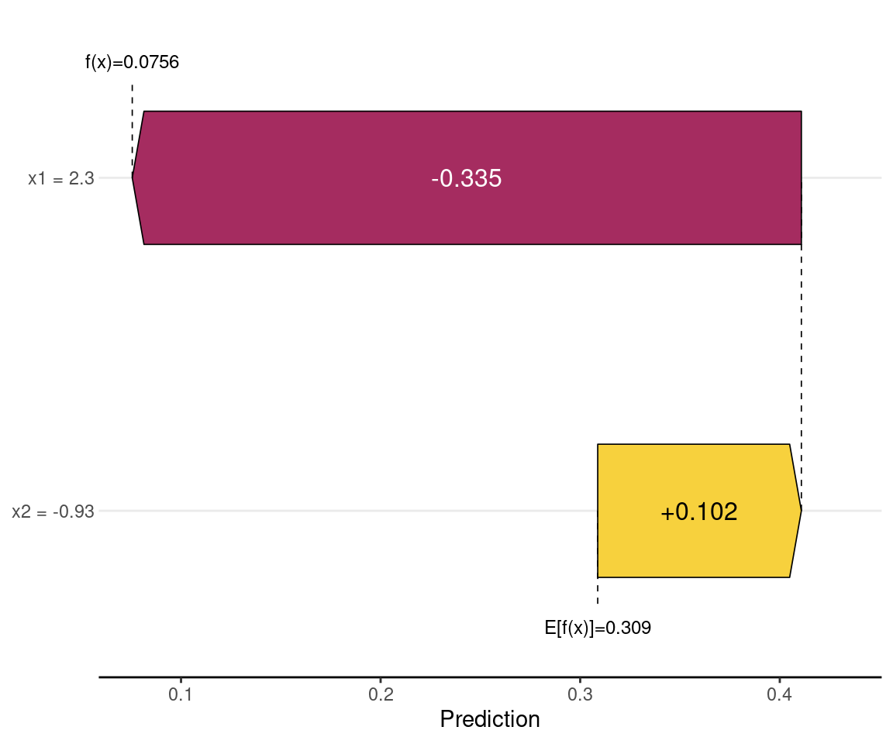

Code
packages <- c(
"DoubleML",
"RCausalML",
"did",
"mlr3",
"mlr3learners",
"mlr3measures",
"xgboost",
"tidyverse",
"lgr"
)This notebook shows how to integrate DoubleML with the did package in R to estimate group-time average treatment effects (ATTs) in difference-in-differences models with multiple periods and staggered adoption. Following the DoubleML R DiD example, we compare default regression-based DiD with ML-based doubly robust DiD using three nuisance engines — linear, random forest, and XGBoost — on both simulated data and the mpdta county-level teen employment dataset.
Double Machine Learning for Difference-in-Differences (DML-DiD) combines the identification credibility of DiD with the flexibility of ML to estimate causal effects in high-dimensional observational panel settings.
The classic two-way fixed effects model assumes:
\[Y_{it} = \alpha_i + \gamma_t + \theta (D_{it} \times Post_t) + \varepsilon_{it}\]
DML-DiD extends this by allowing flexible, nonparametric control for high-dimensional confounders \(X_{it}\): \[\Delta Y_{it} = \theta D_{it} + g(X_{it}) + \zeta_{it}\]
where \(\Delta Y_{it} = Y_{it} - Y_{i,t-1}\) is the first-differenced outcome and \(g(\cdot)\) is estimated with a cross-fitted ML model rather than a linear parametric form.
| Step | Component | Purpose |
|---|---|---|
| 1 | Nuisance estimation | Use ML (RF, XGBoost, Lasso) to estimate: • Propensity score: \(\hat{g}(X) = P(D=1\|X)\) • Outcome regression: \(\hat{\ell}(X) = E[\Delta Y\|D=0,X]\) |
| 2 | Cross-fitting | Split data into \(K\) folds; train nuisance models on \(K-1\) folds, predict on held-out fold to avoid overfitting [[10]] |
| 3 | Neyman-orthogonal score | Construct debiased score: \[\psi_i = \frac{D_i - \hat{g}(X_i)}{\hat{p}(1-\hat{g}(X_i))} \cdot (\Delta Y_i - \hat{\ell}(X_i))\] This ensures small errors in \(\hat{g}, \hat{\ell}\) have negligible impact on \(\hat{\theta}\) [[9]] |
| 4 | Final estimation | \(\hat{\theta}_{DML} = \frac{1}{n}\sum_i \psi_i\) with valid standard errors via influence function asymptotics |
| Challenge | Traditional DiD | DML-DiD Solution |
|---|---|---|
| High-dimensional controls | OLS fails when \(p \gg n\) | ML handles 100s–1000s of covariates |
| Nonlinear confounding | Linear \(g(X)\) may be misspecified | Flexible ML captures complex \(g(X)\) |
| Regularization bias | Lasso shrinks coefficients → biased \(\theta\) | Neyman orthogonality debiases the final estimate |
| Valid inference | No built-in SEs for ML-adjusted DiD | Asymptotic normality → confidence intervals, p-values |
DML-DiD accommodates:
The DoubleML package implements these via DoubleMLPLR, DoubleMLIRM, and custom wrappers for the did package [[10]].
The did package accepts a custom est_method for each internal 2×2 DiD cell. By passing a RCausalML wrapper as est_method, we replace the default linear/logistic nuisances with cross-fitted ML while keeping all of did’s infrastructure for group-time ATTs, aggregation, and inference intact.
| Topic | What we cover |
|---|---|
| Multi-period DiD | Group-time ATT(g,t) with staggered treatment (Callaway & Sant’Anna 2021) |
| Doubly robust DiD | Sant’Anna & Zhao (2020): ML for outcome and propensity in DiD |
| DoubleML + did |
RCausalML::doubleml_did_linear / _rf / _xgboost (DoubleML IRM, score "ATTE") |
| Learners | Defaults: LM + logit; ranger; xgboost (see ?doubleml_did_linear) |
| Evaluation |
doubleml_did_eval_* + doubleml_did_eval_preds; compare aggte and RMSE across wrappers |
| did tools |
ggdid, aggte, pre-test of parallel trends |
Key idea: The {did} package’s default estimator is doubly robust and uses (unpenalized) linear and logistic regression. By passing a custom estimation function that uses DoubleML internally, we can use flexible ML for the nuisance functions while still using did’s infrastructure for group-time effects, aggregation, and inference.
Following R packages are required to run this notebook. If any of these packages are not installed, you can install them using the code below:
DoubleML, RCausalML, did, mlr3, mlr3learners, mlr3measures, xgboost, tidyverse, lgr
packages <- c(
"DoubleML",
"RCausalML",
"did",
"mlr3",
"mlr3learners",
"mlr3measures",
"xgboost",
"tidyverse",
"lgr"
)# Install missing packages
# new_packages <- packages[!(packages %in% installed.packages()[, "Package"])]
# if (length(new_packages)) install.packages(new_packages)# Load packages with suppressed messages
invisible(lapply(packages, function(pkg) {
suppressPackageStartupMessages(library(pkg, character.only = TRUE))
}))# Check loaded packages
cat("Successfully loaded packages:\n")Successfully loaded packages: [1] "package:lgr" "package:lubridate" "package:forcats"
[4] "package:stringr" "package:dplyr" "package:purrr"
[7] "package:readr" "package:tidyr" "package:tibble"
[10] "package:ggplot2" "package:tidyverse" "package:xgboost"
[13] "package:mlr3measures" "package:mlr3learners" "package:mlr3"
[16] "package:did" "package:RCausalML" "package:DoubleML"
[19] "package:stats" "package:graphics" "package:grDevices"
[22] "package:utils" "package:datasets" "package:methods"
[25] "package:base" lgr::get_logger("mlr3")$set_threshold("warn")
#' Adapt RCausalML DoubleML DiD wrappers for did::att_gt
#'
#' `att_gt()` passes `i.weights`, `inffunc`, etc. to a custom `est_method`.
#' The RCausalML helpers only need `y1`, `y0`, `D`, and `covariates`; extra
#' arguments are ignored here (weights are not used in this notebook).
as_did_est_method <- function(fn) {
function(y1, y0, D, covariates, ...) {
fn(y1, y0, D, covariates)
}
}
#' Row-bind `aggte(..., type = "simple")` summaries for several `att_gt` fits
summarize_dml_wrappers <- function(named_attgt, alp = 0.05) {
z <- stats::qnorm(1 - alp / 2)
purrr::imap_dfr(named_attgt, function(obj, wrapper) {
ag <- did::aggte(obj, type = "simple", na.rm = TRUE)
tibble::tibble(
wrapper = wrapper,
overall_att = ag$overall.att,
overall_se = ag$overall.se,
z = ag$overall.att / ag$overall.se,
ci_low = ag$overall.att - z * ag$overall.se,
ci_high = ag$overall.att + z * ag$overall.se
)
})
}We use the introductory example from the did package — a simulated dataset with 4 time periods and staggered treatment assignment — to benchmark the three RCausalML wrappers against the default doubly robust estimator. The DGP is close to linear, which makes this a good sanity check: all three wrappers should converge on similar ATT estimates.
The simulation uses reset.sim() and build_sim_dataset() from the did package with dynamic treatment effects (effect size grows with exposure period). Units first treated in period 1 are dropped so we can recover ATT(g,t) for later cohorts only.
# Original code from did vignette: https://github.com/bcallaway11/did/blob/master/vignettes/did-basics.Rmd
time.periods <- 4
sp <- reset.sim()
sp$te <- 0
set.seed(1814)
# Add dynamic effects (treatment effect varies by period)
sp$te.e <- 1:time.periods
# Generate dataset; drops "always-treated" (period 1) units
dta <- build_sim_dataset(sp)
# Number of observations
nrow(dta)[1] 15916head(dta)The data are in long format (one row per unit-period). Key variables:
| Variable | Role |
|---|---|
G |
First period when the unit is treated (cohort) |
period |
Time period |
Y |
Outcome |
treat |
1 if the unit is treated in this period |
X |
Covariate used for adjustment |
id, cluster
|
Unit and cluster identifiers |
By default, did estimates group-time ATTs using unpenalized linear regression for the outcome nuisance and logistic regression for the propensity. We run this first as the reference point.
# Estimate group-time average treatment effects with default (regression-based) method
example_attgt <- att_gt(yname = "Y",
tname = "period",
idname = "id",
gname = "G",
xformla = ~X,
data = dta
)
summary(example_attgt)
Call:
att_gt(yname = "Y", tname = "period", idname = "id", gname = "G",
xformla = ~X, data = dta)
Reference: Callaway, Brantly and Pedro H.C. Sant'Anna. "Difference-in-Differences with Multiple Time Periods." Journal of Econometrics, Vol. 225, No. 2, pp. 200-230, 2021. <https://doi.org/10.1016/j.jeconom.2020.12.001>, <https://arxiv.org/abs/1803.09015>
Group-Time Average Treatment Effects:
Group Time ATT(g,t) Std. Error [95% Simult. Conf. Band]
2 2 0.9209 0.0638 0.7486 1.0932 *
2 3 1.9875 0.0633 1.8164 2.1586 *
2 4 2.9552 0.0680 2.7715 3.1389 *
3 2 -0.0433 0.0660 -0.2215 0.1349
3 3 1.1080 0.0670 0.9271 1.2890 *
3 4 2.0590 0.0652 1.8828 2.2352 *
4 2 0.0023 0.0634 -0.1690 0.1736
4 3 0.0615 0.0643 -0.1122 0.2353
4 4 0.9523 0.0691 0.7656 1.1391 *
---
Signif. codes: `*' confidence band does not cover 0
P-value for pre-test of parallel trends assumption: 0.60857
Control Group: Never Treated, Anticipation Periods: 0
Estimation Method: Doubly RobustThe output reports ATT(g,t) for each group-time cell with standard errors and simultaneous confidence bands, along with a pre-test p-value for the parallel trends assumption.
Sant’Anna and Zhao (2020) establish a doubly robust DiD estimator that is valid with flexible nuisance functions. RCausalML wraps this for the did API: each wrapper (i) forms the first difference \(\Delta Y = Y_1 - Y_0\), (ii) fits DoubleMLIRM with score "ATTE" using the appropriate mlr3 learners, and (iii) returns ATT and att.inf.func in the format did expects.
| Wrapper | Outcome nuisance ml_g
|
Propensity ml_m
|
|---|---|---|
doubleml_did_linear |
regr.lm |
classif.log_reg |
doubleml_did_rf |
regr.ranger |
classif.ranger |
doubleml_did_xgboost |
regr.xgboost |
classif.xgboost |
See ?RCausalML::doubleml_did_linear for arguments (custom learners, n_folds, score, etc.).
set.seed(1234)
example_attgt_dml_linear <- att_gt(
yname = "Y",
tname = "period",
idname = "id",
gname = "G",
xformla = ~X,
data = dta,
est_method = as_did_est_method(doubleml_did_linear)
)
example_attgt_dml_rf <- att_gt(
yname = "Y",
tname = "period",
idname = "id",
gname = "G",
xformla = ~X,
data = dta,
est_method = as_did_est_method(doubleml_did_rf)
)
example_attgt_dml_xgb <- att_gt(
yname = "Y",
tname = "period",
idname = "id",
gname = "G",
xformla = ~X,
data = dta,
est_method = as_did_est_method(doubleml_did_xgboost)
)
summary(example_attgt_dml_linear)
Call:
att_gt(yname = "Y", tname = "period", idname = "id", gname = "G",
xformla = ~X, data = dta, est_method = as_did_est_method(doubleml_did_linear))
Reference: Callaway, Brantly and Pedro H.C. Sant'Anna. "Difference-in-Differences with Multiple Time Periods." Journal of Econometrics, Vol. 225, No. 2, pp. 200-230, 2021. <https://doi.org/10.1016/j.jeconom.2020.12.001>, <https://arxiv.org/abs/1803.09015>
Group-Time Average Treatment Effects:
Group Time ATT(g,t) Std. Error [95% Simult. Conf. Band]
2 2 0.9145 0.0646 0.7368 1.0922 *
2 3 1.9951 0.0631 1.8215 2.1687 *
2 4 2.9561 0.0622 2.7850 3.1273 *
3 2 -0.0418 0.0629 -0.2147 0.1312
3 3 1.1041 0.0651 0.9251 1.2830 *
3 4 2.0533 0.0658 1.8725 2.2341 *
4 2 -0.0028 0.0718 -0.2002 0.1946
4 3 0.0635 0.0663 -0.1188 0.2458
4 4 0.9609 0.0690 0.7711 1.1507 *
---
Signif. codes: `*' confidence band does not cover 0
P-value for pre-test of parallel trends assumption: 0.64579
Control Group: Never Treated, Anticipation Periods: 0summary(example_attgt_dml_rf)
Call:
att_gt(yname = "Y", tname = "period", idname = "id", gname = "G",
xformla = ~X, data = dta, est_method = as_did_est_method(doubleml_did_rf))
Reference: Callaway, Brantly and Pedro H.C. Sant'Anna. "Difference-in-Differences with Multiple Time Periods." Journal of Econometrics, Vol. 225, No. 2, pp. 200-230, 2021. <https://doi.org/10.1016/j.jeconom.2020.12.001>, <https://arxiv.org/abs/1803.09015>
Group-Time Average Treatment Effects:
Group Time ATT(g,t) Std. Error [95% Simult. Conf. Band]
2 2 0.9602 0.0701 0.7633 1.1572 *
2 3 2.0919 0.0804 1.8662 2.3176 *
2 4 3.1003 0.0994 2.8213 3.3793 *
3 2 0.0867 0.0739 -0.1207 0.2941
3 3 1.2231 0.0744 1.0141 1.4320 *
3 4 2.2732 0.0899 2.0206 2.5257 *
4 2 0.1898 0.0734 -0.0162 0.3959
4 3 0.2422 0.0673 0.0533 0.4311 *
4 4 1.1387 0.0678 0.9482 1.3291 *
---
Signif. codes: `*' confidence band does not cover 0
P-value for pre-test of parallel trends assumption: 2e-05
Control Group: Never Treated, Anticipation Periods: 0summary(example_attgt_dml_xgb)
Call:
att_gt(yname = "Y", tname = "period", idname = "id", gname = "G",
xformla = ~X, data = dta, est_method = as_did_est_method(doubleml_did_xgboost))
Reference: Callaway, Brantly and Pedro H.C. Sant'Anna. "Difference-in-Differences with Multiple Time Periods." Journal of Econometrics, Vol. 225, No. 2, pp. 200-230, 2021. <https://doi.org/10.1016/j.jeconom.2020.12.001>, <https://arxiv.org/abs/1803.09015>
Group-Time Average Treatment Effects:
Group Time ATT(g,t) Std. Error [95% Simult. Conf. Band]
2 2 0.9340 0.0796 0.7064 1.1615 *
2 3 1.8815 0.0877 1.6309 2.1320 *
2 4 2.8617 0.0866 2.6143 3.1091 *
3 2 -0.0386 0.0925 -0.3031 0.2259
3 3 1.1317 0.0994 0.8477 1.4157 *
3 4 2.0526 0.0928 1.7873 2.3179 *
4 2 -0.0641 0.0960 -0.3384 0.2103
4 3 0.1304 0.1001 -0.1556 0.4164
4 4 0.8541 0.1075 0.5469 1.1614 *
---
Signif. codes: `*' confidence band does not cover 0
P-value for pre-test of parallel trends assumption: 0.6354
Control Group: Never Treated, Anticipation Periods: 0For this near-linear DGP, the linear wrapper typically tracks the default did estimator most closely. Random forest and XGBoost add flexibility but may show modestly larger standard errors in some cells due to the bias–variance trade-off inherent in cross-fitted nonparametric nuisances.
We summarize the overall ATT using aggte(..., type = "simple") and measure cell-by-cell agreement between wrappers as the root mean squared difference in \(\widehat{\mathrm{ATT}}(g,t)\). Small RMSE indicates the wrappers agree on individual group-time effects, not just the aggregate.
| wrapper | overall_att | overall_se | z | ci_low | ci_high |
|---|---|---|---|---|---|
| linear | 1.6586 | 0.0357 | 46.4133 | 0 | 3.3172 |
| rf | 1.7928 | 0.0534 | 33.5911 | 0 | 3.5855 |
| xgboost | 1.6132 | 0.0469 | 34.4014 | 0 | 3.2265 |
gt_mat_a <- tibble::tibble(
linear = example_attgt_dml_linear$att,
rf = example_attgt_dml_rf$att,
xgboost = example_attgt_dml_xgb$att
)
tibble::tibble(
comparison = c("linear vs rf", "linear vs xgboost", "rf vs xgboost"),
rmse_att_gt = c(
sqrt(mean((gt_mat_a$linear - gt_mat_a$rf)^2, na.rm = TRUE)),
sqrt(mean((gt_mat_a$linear - gt_mat_a$xgboost)^2, na.rm = TRUE)),
sqrt(mean((gt_mat_a$rf - gt_mat_a$xgboost)^2, na.rm = TRUE))
)
) |>
knitr::kable(digits = 5, caption = "Part A: RMSE between group-time ATTs across wrappers")| comparison | rmse_att_gt |
|---|---|
| linear vs rf | 0.15344 |
| linear vs xgboost | 0.06881 |
| rf vs xgboost | 0.19223 |
Group-time ATTs from any wrapper slot directly into did’s infrastructure: ggdid() for plotting and aggte() for aggregation.
ggdid(example_attgt_dml_linear)
aggte(..., type = "simple") collapses the group-time ATTs into a single weighted average. The did package also supports type = "dynamic" (event-study) and type = "group" (by cohort).
agg.simple <- aggte(example_attgt_dml_linear, type = "simple")
summary(agg.simple)
Call:
aggte(MP = example_attgt_dml_linear, type = "simple")
Reference: Callaway, Brantly and Pedro H.C. Sant'Anna. "Difference-in-Differences with Multiple Time Periods." Journal of Econometrics, Vol. 225, No. 2, pp. 200-230, 2021. <https://doi.org/10.1016/j.jeconom.2020.12.001>, <https://arxiv.org/abs/1803.09015>
ATT Std. Error [ 95% Conf. Int.]
1.6586 0.0361 1.5879 1.7293 *
---
Signif. codes: `*' confidence band does not cover 0
Control Group: Never Treated, Anticipation Periods: 0doubleml_did_eval_linear, doubleml_did_eval_rf, and doubleml_did_eval_xgboost are evaluation variants that fit with store_predictions = TRUE and attach cross-fitted metrics via doubleml_did_eval_preds: RMSE of the outcome nuisance ml_g0 on control units and classification accuracy of the propensity ml_m.
Because a full att_gt call invokes the wrapper on many internal 2×2 slices, we evaluate nuisance quality on a single simulated DiD cross-section (one covariate, binary treatment, first-differenced outcome) to keep runtime manageable.
set.seed(99)
n_ev <- 600
X_ev <- matrix(stats::rnorm(n_ev), ncol = 1L)
colnames(X_ev) <- "X1"
Dev <- stats::rbinom(n_ev, 1L, stats::plogis(0.35 * X_ev[, 1L]))
delta_ev <- 0.5 * Dev + 0.25 * X_ev[, 1L] + stats::rnorm(n_ev)
y0_ev <- stats::rnorm(n_ev)
y1_ev <- y0_ev + delta_ev
ev_lin <- doubleml_did_eval_linear(y1_ev, y0_ev, Dev, X_ev, print_eval = FALSE)
ev_rf <- doubleml_did_eval_rf(y1_ev, y0_ev, Dev, X_ev, print_eval = FALSE)
ev_xgb <- doubleml_did_eval_xgboost(y1_ev, y0_ev, Dev, X_ev, print_eval = FALSE)
dplyr::bind_rows(
tibble::as_tibble_row(unlist(ev_lin$eval_predictions)) |> dplyr::mutate(wrapper = "linear"),
tibble::as_tibble_row(unlist(ev_rf$eval_predictions)) |> dplyr::mutate(wrapper = "rf"),
tibble::as_tibble_row(unlist(ev_xgb$eval_predictions)) |> dplyr::mutate(wrapper = "xgboost")
) |>
dplyr::relocate(wrapper) |>
knitr::kable(digits = 4, caption = "Part A: illustrative nuisance scores (one simulated DiD slice)")| wrapper | ml_g0 | ml_m |
|---|---|---|
| linear | 1.0110 | 0.5633 |
| rf | 1.1299 | 0.5233 |
| xgboost | 1.2012 | 0.5283 |
On a linear DGP, ml_g0 RMSE is typically lowest for the linear wrapper. Flexible methods can still recover similar ATT estimates because Neyman orthogonality limits the propagation of first-stage bias into the final causal estimate.
mpdta)Callaway and Sant’Anna (2021) examined the causal impact of higher state minimum wages (above the federal level) on teen employment across U.S. counties, using data from roughly 2001–2007.
This demonstration uses a cleaned, balanced panel dataset from their study (called mpdta in the did R package; see the package documentation for details). The data is employed here purely as an example to illustrate key differences between the DoubleML and did packages. A similar notebook using the same data appears in the did package documentation.
Following the original example, we report results under two identification strategies: - Unconditional parallel trends assumption - Conditional parallel trends assumption (adjusting for covariates)
For Double Machine Learning (DML) DiD we fit three RCausalML wrappers—doubleml_did_linear, doubleml_did_rf, and doubleml_did_xgboost—and compare aggregated ATTs, dispersion of group-time estimates, and illustrative nuisance metrics (via doubleml_did_eval_*). Small differences versus default did are expected because of cross-fitting and flexible nuisances.
The did package includes the mpdta dataset: county-level teen employment (log employment) from 2003–2007, with variation in the timing of minimum-wage increases across states. We use it to illustrate DoubleML for DiD on real data.
attgt_mpdta <- att_gt(yname = "lemp",
tname = "year",
idname = "countyreal",
gname = "first.treat",
xformla = ~lpop,
data = mpdta)
summary(attgt_mpdta)
Call:
att_gt(yname = "lemp", tname = "year", idname = "countyreal",
gname = "first.treat", xformla = ~lpop, data = mpdta)
Reference: Callaway, Brantly and Pedro H.C. Sant'Anna. "Difference-in-Differences with Multiple Time Periods." Journal of Econometrics, Vol. 225, No. 2, pp. 200-230, 2021. <https://doi.org/10.1016/j.jeconom.2020.12.001>, <https://arxiv.org/abs/1803.09015>
Group-Time Average Treatment Effects:
Group Time ATT(g,t) Std. Error [95% Simult. Conf. Band]
2004 2004 -0.0145 0.0224 -0.0733 0.0443
2004 2005 -0.0764 0.0292 -0.1531 0.0003
2004 2006 -0.1404 0.0380 -0.2402 -0.0407 *
2004 2007 -0.1069 0.0359 -0.2012 -0.0126 *
2006 2004 -0.0005 0.0227 -0.0602 0.0592
2006 2005 -0.0062 0.0191 -0.0563 0.0438
2006 2006 0.0010 0.0202 -0.0521 0.0540
2006 2007 -0.0413 0.0204 -0.0950 0.0124
2007 2004 0.0267 0.0132 -0.0079 0.0614
2007 2005 -0.0046 0.0142 -0.0419 0.0327
2007 2006 -0.0284 0.0196 -0.0800 0.0231
2007 2007 -0.0288 0.0172 -0.0740 0.0164
---
Signif. codes: `*' confidence band does not cover 0
P-value for pre-test of parallel trends assumption: 0.23267
Control Group: Never Treated, Anticipation Periods: 0
Estimation Method: Doubly Robustset.seed(1234)
attgt_mpdta_dml_lin <- att_gt(
yname = "lemp",
tname = "year",
idname = "countyreal",
gname = "first.treat",
xformla = ~lpop,
data = mpdta,
est_method = as_did_est_method(doubleml_did_linear)
)
attgt_mpdta_dml_rf <- att_gt(
yname = "lemp",
tname = "year",
idname = "countyreal",
gname = "first.treat",
xformla = ~lpop,
data = mpdta,
est_method = as_did_est_method(doubleml_did_rf)
)
attgt_mpdta_dml_xgb <- att_gt(
yname = "lemp",
tname = "year",
idname = "countyreal",
gname = "first.treat",
xformla = ~lpop,
data = mpdta,
est_method = as_did_est_method(doubleml_did_xgboost)
)
summary(attgt_mpdta_dml_lin)
Call:
att_gt(yname = "lemp", tname = "year", idname = "countyreal",
gname = "first.treat", xformla = ~lpop, data = mpdta, est_method = as_did_est_method(doubleml_did_linear))
Reference: Callaway, Brantly and Pedro H.C. Sant'Anna. "Difference-in-Differences with Multiple Time Periods." Journal of Econometrics, Vol. 225, No. 2, pp. 200-230, 2021. <https://doi.org/10.1016/j.jeconom.2020.12.001>, <https://arxiv.org/abs/1803.09015>
Group-Time Average Treatment Effects:
Group Time ATT(g,t) Std. Error [95% Simult. Conf. Band]
2004 2004 NA NaN NA NA
2004 2005 -0.1105 0.0457 -0.2342 0.0131
2004 2006 NA NaN NA NA
2004 2007 -0.1049 0.0380 -0.2076 -0.0023 *
2006 2004 0.0094 0.0253 -0.0592 0.0779
2006 2005 -0.0123 0.0176 -0.0599 0.0353
2006 2006 -0.0074 0.0255 -0.0763 0.0616
2006 2007 NA NaN NA NA
2007 2004 0.0215 0.0130 -0.0137 0.0568
2007 2005 -0.0194 0.0173 -0.0661 0.0273
2007 2006 -0.0292 0.0180 -0.0778 0.0194
2007 2007 -0.0321 0.0179 -0.0807 0.0164
---
Signif. codes: `*' confidence band does not cover 0
P-value for pre-test of parallel trends assumption: 0.18102
Control Group: Never Treated, Anticipation Periods: 0summary(attgt_mpdta_dml_rf)
Call:
att_gt(yname = "lemp", tname = "year", idname = "countyreal",
gname = "first.treat", xformla = ~lpop, data = mpdta, est_method = as_did_est_method(doubleml_did_rf))
Reference: Callaway, Brantly and Pedro H.C. Sant'Anna. "Difference-in-Differences with Multiple Time Periods." Journal of Econometrics, Vol. 225, No. 2, pp. 200-230, 2021. <https://doi.org/10.1016/j.jeconom.2020.12.001>, <https://arxiv.org/abs/1803.09015>
Group-Time Average Treatment Effects:
Group Time ATT(g,t) Std. Error [95% Simult. Conf. Band]
2004 2004 NA NaN NA NA
2004 2005 NA NaN NA NA
2004 2006 NA NaN NA NA
2004 2007 NA NaN NA NA
2006 2004 NA NaN NA NA
2006 2005 -0.0073 0.0233 -0.0644 0.0499
2006 2006 -0.0082 0.0223 -0.0630 0.0466
2006 2007 -0.0394 0.0193 -0.0869 0.0081
2007 2004 0.0233 0.0165 -0.0172 0.0638
2007 2005 -0.0014 0.0165 -0.0419 0.0392
2007 2006 -0.0345 0.0210 -0.0860 0.0170
2007 2007 -0.0328 0.0225 -0.0881 0.0225
---
Signif. codes: `*' confidence band does not cover 0
P-value for pre-test of parallel trends assumption: 0.21051
Control Group: Never Treated, Anticipation Periods: 0summary(attgt_mpdta_dml_xgb)
Call:
att_gt(yname = "lemp", tname = "year", idname = "countyreal",
gname = "first.treat", xformla = ~lpop, data = mpdta, est_method = as_did_est_method(doubleml_did_xgboost))
Reference: Callaway, Brantly and Pedro H.C. Sant'Anna. "Difference-in-Differences with Multiple Time Periods." Journal of Econometrics, Vol. 225, No. 2, pp. 200-230, 2021. <https://doi.org/10.1016/j.jeconom.2020.12.001>, <https://arxiv.org/abs/1803.09015>
Group-Time Average Treatment Effects:
Group Time ATT(g,t) Std. Error [95% Simult. Conf. Band]
2004 2004 NA NaN NA NA
2004 2005 NA NaN NA NA
2004 2006 NA NaN NA NA
2004 2007 NA NaN NA NA
2006 2004 -0.0115 0.0292 -0.0907 0.0677
2006 2005 0.0033 0.0514 -0.1363 0.1429
2006 2006 -0.0489 0.0883 -0.2885 0.1906
2006 2007 -0.0261 0.0461 -0.1513 0.0990
2007 2004 0.0195 0.0219 -0.0399 0.0788
2007 2005 0.0128 0.0278 -0.0625 0.0881
2007 2006 -0.0446 0.0315 -0.1300 0.0409
2007 2007 -0.0202 0.0412 -0.1321 0.0916
---
Signif. codes: `*' confidence band does not cover 0
P-value for pre-test of parallel trends assumption: 0.63973
Control Group: Never Treated, Anticipation Periods: 0| wrapper | overall_att | overall_se | z | ci_low | ci_high |
|---|---|---|---|---|---|
| linear | -0.0418 | 0.0149 | -2.8117 | 0 | -0.0836 |
| rf | -0.0294 | 0.0145 | -2.0185 | 0 | -0.0587 |
| xgboost | -0.0268 | 0.0310 | -0.8647 | 0 | -0.0536 |
gt_mat_b <- tibble::tibble(
linear = attgt_mpdta_dml_lin$att,
rf = attgt_mpdta_dml_rf$att,
xgboost = attgt_mpdta_dml_xgb$att
)
tibble::tibble(
comparison = c("linear vs rf", "linear vs xgboost", "rf vs xgboost"),
rmse_att_gt = c(
sqrt(mean((gt_mat_b$linear - gt_mat_b$rf)^2, na.rm = TRUE)),
sqrt(mean((gt_mat_b$linear - gt_mat_b$xgboost)^2, na.rm = TRUE)),
sqrt(mean((gt_mat_b$rf - gt_mat_b$xgboost)^2, na.rm = TRUE))
)
) |>
knitr::kable(digits = 5, caption = "Part B: RMSE between group-time ATTs across wrappers")| comparison | rmse_att_gt |
|---|---|
| linear vs rf | 0.00800 |
| linear vs xgboost | 0.02339 |
| rf vs xgboost | 0.01861 |
set.seed(100)
n_ev2 <- 600
X_ev2 <- cbind(stats::rnorm(n_ev2), stats::rnorm(n_ev2))
colnames(X_ev2) <- c("x1", "x2")
D2 <- stats::rbinom(n_ev2, 1L, stats::plogis(0.2 * X_ev2[, 1L] - 0.15 * X_ev2[, 2L]))
delta2 <- 0.35 * D2 + 0.2 * X_ev2[, 1L] + stats::rnorm(n_ev2)
y0_2 <- stats::rnorm(n_ev2)
y1_2 <- y0_2 + delta2
ev2_lin <- doubleml_did_eval_linear(y1_2, y0_2, D2, X_ev2, print_eval = FALSE)
ev2_rf <- doubleml_did_eval_rf(y1_2, y0_2, D2, X_ev2, print_eval = FALSE)
ev2_xgb <- doubleml_did_eval_xgboost(y1_2, y0_2, D2, X_ev2, print_eval = FALSE)
dplyr::bind_rows(
tibble::as_tibble_row(unlist(ev2_lin$eval_predictions)) |> dplyr::mutate(wrapper = "linear"),
tibble::as_tibble_row(unlist(ev2_rf$eval_predictions)) |> dplyr::mutate(wrapper = "rf"),
tibble::as_tibble_row(unlist(ev2_xgb$eval_predictions)) |> dplyr::mutate(wrapper = "xgboost")
) |>
dplyr::relocate(wrapper) |>
knitr::kable(digits = 4, caption = "Part B: illustrative nuisance scores (two covariates)")| wrapper | ml_g0 | ml_m |
|---|---|---|
| linear | 1.0492 | 0.5250 |
| rf | 1.1396 | 0.5233 |
| xgboost | 1.2816 | 0.5150 |
The simple aggregate ATT summarizes the average effect of minimum-wage treatment on log teen employment across all group-time cells, using the linear wrapper’s cross-fitted nuisances.
agg_mpdta <- aggte(attgt_mpdta_dml_lin, type = "simple", na.rm = TRUE)
summary(agg_mpdta)
Call:
aggte(MP = attgt_mpdta_dml_lin, type = "simple", na.rm = TRUE)
Reference: Callaway, Brantly and Pedro H.C. Sant'Anna. "Difference-in-Differences with Multiple Time Periods." Journal of Econometrics, Vol. 225, No. 2, pp. 200-230, 2021. <https://doi.org/10.1016/j.jeconom.2020.12.001>, <https://arxiv.org/abs/1803.09015>
ATT Std. Error [ 95% Conf. Int.]
-0.0418 0.0138 -0.0688 -0.0148 *
---
Signif. codes: `*' confidence band does not cover 0
Control Group: Never Treated, Anticipation Periods: 0The aggregate ATT gives a single summary estimate of the minimum-wage effect on log teen employment, averaging across all treated cohort-time cells with covariate adjustment on lpop. Compare against cmp_agg_b to see how the RF and XGBoost wrappers differ.
did::att_gt() with doubleml_did_* wrappers operates on many internal 2×2 slices and returns group-time ATTs plus influence functions. It does not expose a single global object with a predict(object, newdata) method, so RCausalML::explain_cate() cannot be applied directly to the att_gt fit.
Instead, we illustrate the SHAP workflow on a single DiD slice: we fit LinearDML on the Part B toy sample (x1, x2, D2, and \(\Delta Y = y_{1} - y_{0}\)) and compute permutation SHAP for the predicted \(\hat{\tau}(X)\). These SHAP values are a descriptive summary of CATE heterogeneity within that DML model — not the group-time ATTs reported by did.
To keep runtime manageable, explanation and background rows are subsampled from deduplicated covariate rows, using non-overlapping sets where possible to avoid leakage. Parallel SHAP via {future} is used when the package is available.
SHAP values explain how each covariate contributes to the individual CATE—e.g. which features make the model believe the first-difference “effect” is larger or smaller for that row. We compute them with explain_cate():
X — rows you want to explainbg_X — background (integration) distributionhas_ks <- requireNamespace("kernelshap", quietly = TRUE)
has_sv <- requireNamespace("shapviz", quietly = TRUE)
run_shap <- has_ks && has_sv
if (!run_shap) {
message("Skipping SHAP: install.packages(c(\"kernelshap\", \"shapviz\")) to run this section.")
}has_future <- requireNamespace("future", quietly = TRUE)
if (has_future) {
library(future)
plan(multisession, workers = max(1L, parallel::detectCores() - 1L))
}
dy_shap <- as.numeric(y1_2 - y0_2)
X_df <- as.data.frame(X_ev2)
X_shap_pool <- X_df[!duplicated(X_df), , drop = FALSE]
set.seed(102)
ldml_shap <- LinearDML(model_y = "lm", model_t = "lm", n_fold = 5L, seed = 102)
ldml_shap <- fit(ldml_shap, X_df, D2, dy_shap)
nexplain <- min(80L, nrow(X_shap_pool))
nbg <- min(50L, nrow(X_shap_pool))
if (nrow(X_shap_pool) > nexplain + nbg) {
idxexplain <- sample(nrow(X_shap_pool), nexplain)
idxbg <- sample(setdiff(seq_len(nrow(X_shap_pool)), idxexplain), nbg)
} else {
idxexplain <- sample(nrow(X_shap_pool), nexplain)
idxbg <- sample(nrow(X_shap_pool), nbg)
}
Xexplain <- X_shap_pool[idxexplain, , drop = FALSE]
bg_X_df <- X_shap_pool[idxbg, , drop = FALSE]fg_prev <- getOption("future.globals.maxSize", default = 500 * 1024^2)
if (has_future) {
options(future.globals.maxSize = max(2 * 1024^3, fg_prev))
}
ks_args <- list(
object = ldml_shap,
X = Xexplain,
bg_X = bg_X_df,
use_permshap = TRUE,
parallel = has_future,
verbose = FALSE
)
if (has_future) {
ks_args$parallel_args <- list(packages = c("RCausalML"))
}
ks <- tryCatch(
do.call(explain_cate, ks_args),
finally = {
if (has_future) {
future::plan(future::sequential)
options(future.globals.maxSize = fg_prev)
}
}
)Beeswarm plot — shows the distribution of SHAP values per feature; large absolute values indicate a stronger influence on the predicted CATE.
shp <- shapviz::shapviz(ks, X = Xexplain)
shapviz::sv_importance(shp, kind = "beeswarm") +
ggplot2::labs(title = "SHAP (beeswarm): predicted CATE, LinearDML on DiD-style slice")
Bar plot — average |SHAP| per feature, useful for ranking overall feature importance.
shapviz::sv_importance(shp, show_numbers = TRUE) +
ggplot2::labs(title = "SHAP importance (bar): predicted CATE, LinearDML on DiD-style slice")
Dependence plots show how each feature drives the predicted treatment effect. Colour encodes a second variable chosen automatically for potential interaction effects.
xvars <- colnames(shp$X)
shapviz::sv_dependence(shp, v = xvars, share_y = TRUE)
For this toy DGP, larger x1 shifts both treatment propensity and \(\\Delta Y\); you may see SHAP for x1 and x2 align with those roles.
Waterfall and force plots decompose the predicted CATE for one row into its baseline value plus feature contributions, making individual predictions fully transparent.
shapviz::sv_waterfall(shp, row_id = 1)
shapviz::sv_force(shp, row_id = 1)
Waterfall plot for the observation with the largest x1 value — illustrates how an individual with high treatment propensity is explained.
row_show <- if (nrow(shp$X) >= 1L) as.integer(which.max(shp$X$x1)) else 1L
shapviz::sv_waterfall(shp, row_id = row_show)
| Component | What we did |
|---|---|
| Data | Long-format panel with cohort (G / first.treat), time, outcome, and covariates |
| Benchmark | Default att_gt(..., xformla = ~...) with built-in doubly robust estimator |
| DoubleML DiD |
est_method = as_did_est_method(doubleml_did_*) — did receives ATT and att.inf.func
|
| Nuisance learners | Linear, random forest, XGBoost via doubleml_did_linear/rf/xgboost
|
| Diagnostics |
aggte(..., type = "simple"), pairwise ATT RMSE, doubleml_did_eval_* nuisance scores |
| did tools |
ggdid(), aggte(), pre-test of parallel trends — all unchanged |
The doubly robust score, combined with Neyman orthogonality and cross-fitting, allows flexible ML nuisances without sacrificing valid inference on the ATT. In practice, the linear wrapper is often a good starting point; switching to RF or XGBoost matters most when the true propensity or outcome surface is substantially nonlinear.
Callaway, B., & Sant’Anna, P. H. C. (2021). Difference-in-differences with multiple time periods. Journal of Econometrics, 225(2), 200–230. https://doi.org/10.1016/j.jeconom.2020.12.001
Sant’Anna, P. H. C., & Zhao, J. (2020). Doubly robust difference-in-differences estimators. Journal of Econometrics, 219(1), 101–122. https://doi.org/10.1016/j.jeconom.2020.06.003
Chernozhukov, V., Chetverikov, D., Demirer, M., Duflo, E., Hansen, C., Newey, W., & Robins, J. (2018). Double/debiased machine learning for treatment and structural parameters. The Econometrics Journal, 21(1), C1–C68. https://doi.org/10.1111/ectj.12097